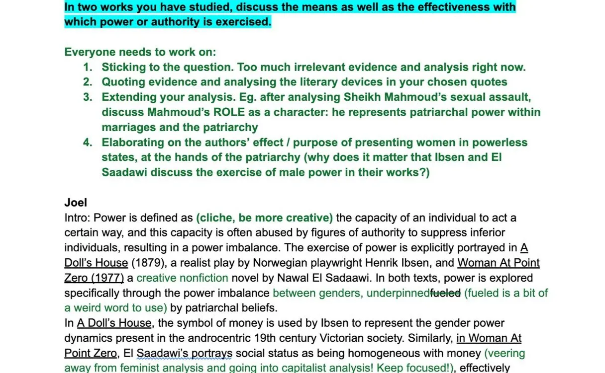
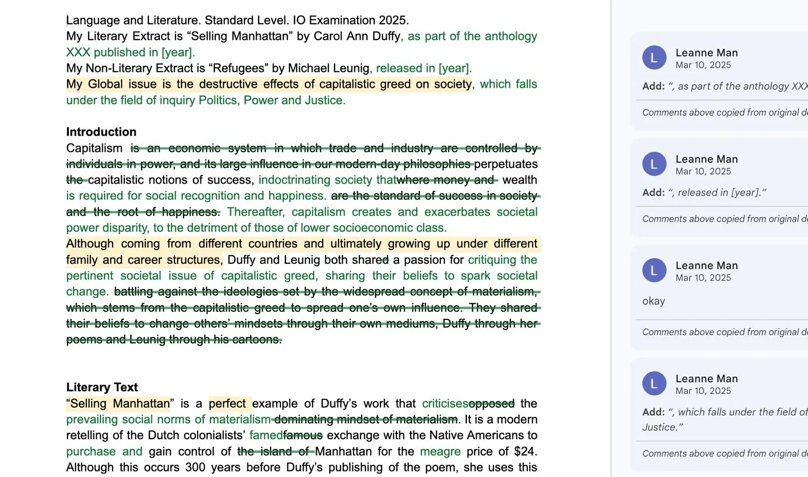
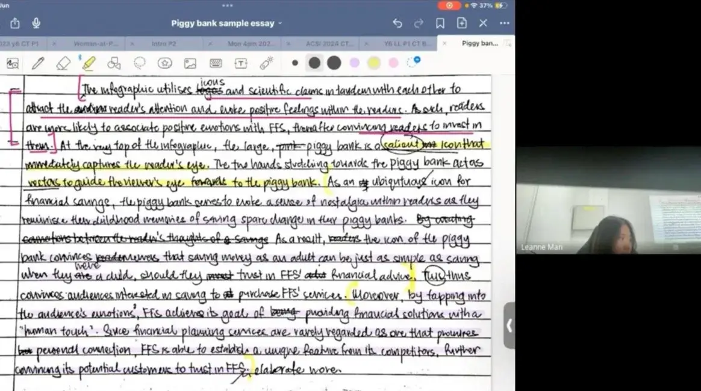
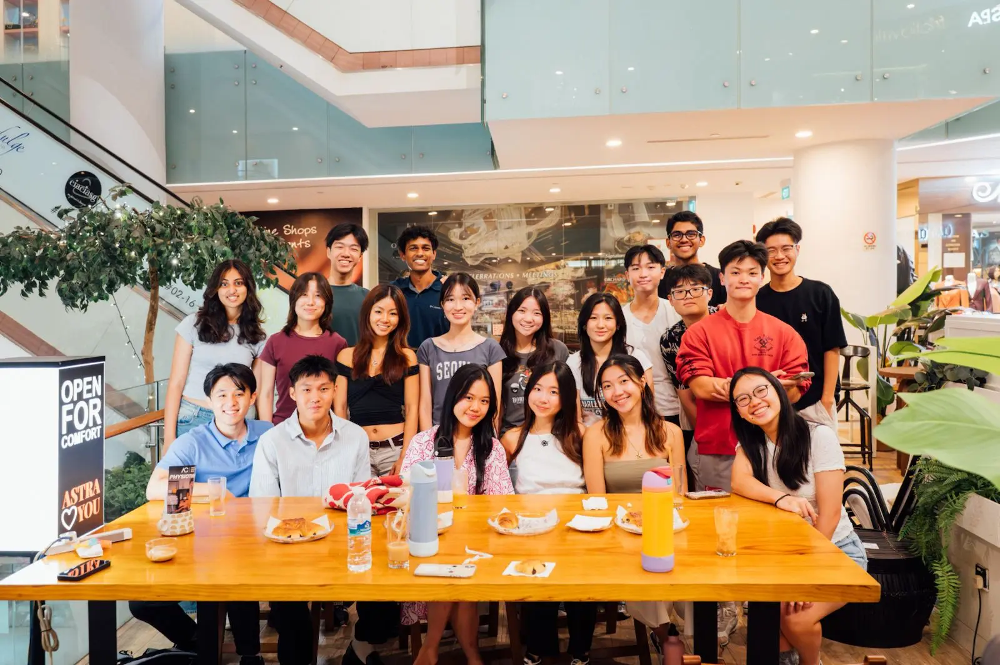

A peek into our classroom



The predominant culture of education is where students are told, “learn it first, hopefully you can use it later". Such a ‘banking system’ of education grooms students to perceive education as a means to an end when really, it can be so much more.
That’s where praxis transforms individuals.
Praxis emphasises the dynamic interplay between theory and practice: where reflection informs practice and practice, in turn, shapes and refines understanding. At PRAXIS, we show how one’s education applies practically in reality. We show how education can be a tool of empowerment:
For one to discover their passions;
Find and form community that uplifts and inspires; and
Take control of their reality.
PRAXIS students have access to a network of individuals from various top universities in a diversity of disciplines. This way, our students aren’t alone when navigating the oftentimes confusing post-IB pathways.
In August 2025, PRAXIS organised a PRAXIS&People event, where PRAXIS students could meet seniors studying in different universities, local and overseas, to discover more about the university and the application process. More importantly, it was for our students to meet new people and build community!
